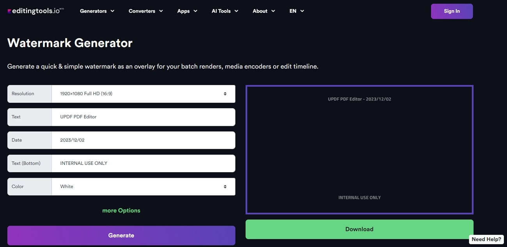

Home
Why?
How?
When?
Artists began turning to these AI‑disrupting tools in the past couple of years, but their use accelerated in 2023,
when generative AI systems like Midjourney, Stable Diffusion, and others rapidly improved and became widely adopted.
As NPR reports, this shift happened after artists saw their styles being replicated online and realized that legal
challenges, opt‑out systems, and public pressure weren’t slowing down the expansion of AI training datasets.
With new tools like Nightshade becoming publicly available in late 2023, artists started using them proactively—right
at the moment when AI companies were scaling up training and scraping at unprecedented speed.
.
.
.
.
\/
